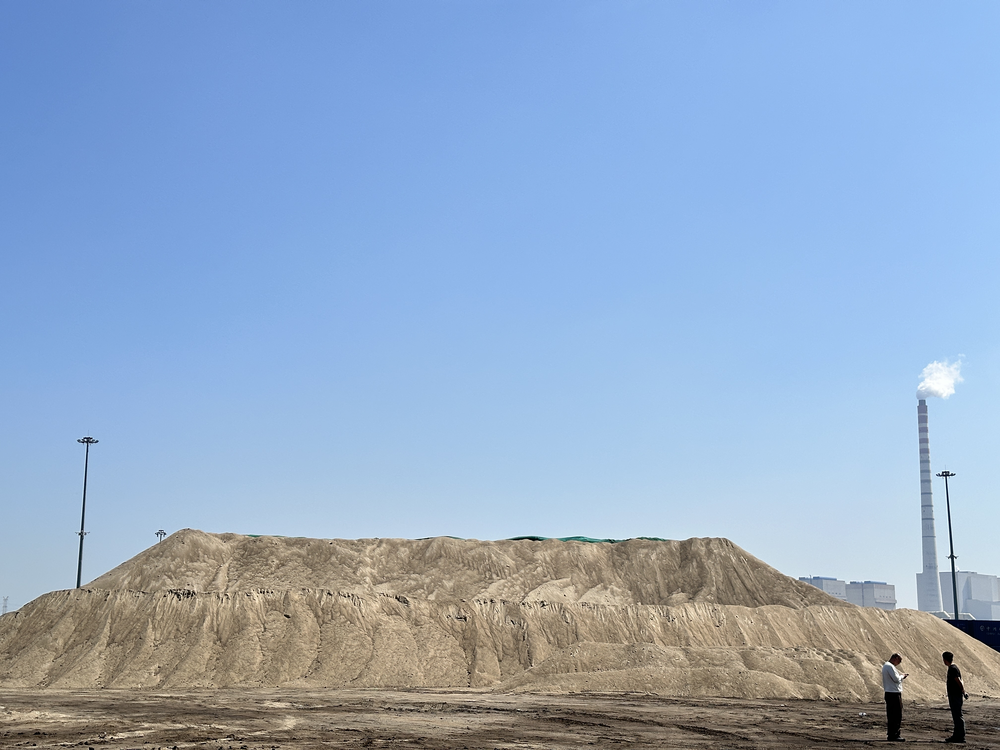
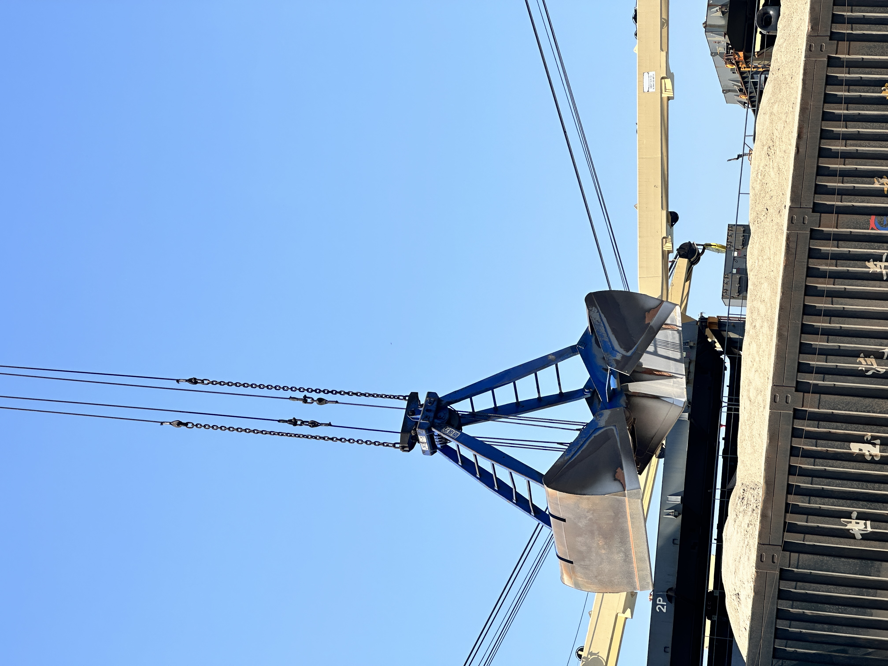

SSAB and Heidelberg Materials Are Testing EAF Slag for Cement: Why a New SCM Stream Could Reshape Future Supply
SSAB and Heidelberg Materials launched a four-year project in Sweden on 20 April 2026 to develop electric arc furnace slag into a supplementary cementitious material, backed by more than SEK20m in public funding. For the cement trade, the signal goes beyond one research programme: as steelmaking shifts from blast furnaces to electric arc furnaces, the future slag supply map may change in both chemistry and logistics.
SSAB 与 Heidelberg Materials 测试电弧炉矿渣用于水泥：新的 SCM 来源为何可能重塑未来供应
2026 年 4 月 20 日，SSAB 与 Heidelberg Materials 在瑞典启动了一项为期四年的项目，目标是将电弧炉矿渣开发为补充胶凝材料，并获得超过 2000 万瑞典克朗的公共资金支持。对水泥贸易而言，这一信号不止于单个科研项目：随着钢铁生产从高炉路线转向电弧炉路线，未来矿渣的化学特性与物流版图都可能发生变化。

A new collaboration in Sweden is drawing attention from far beyond northern Europe. On 20 April 2026, SSAB and Heidelberg Materials announced a four-year research project to turn electric arc furnace slag into a supplementary cementitious material for cement and concrete. The programme is backed by more than SEK20m through Sweden's Just Transition funding framework and brings in Luleå University of Technology, the University of Oulu, and Swerim. On the surface, this is a technical research story. In practice, it is also an early signal that the next era of low-carbon cement may depend not only on how much slag the market needs, but on what kind of slag the steel industry will produce in the future.
1. Why this project matters beyond one Swedish partnership
The partnership matters because it links two transitions that are often discussed separately. Steelmakers are moving toward electric arc furnace routes to cut emissions, while cement producers are trying to reduce clinker ratios through more supplementary cementitious materials. Traditionally, blast furnace slag has been the best-known bridge between those two industries. But if the steel sector gradually shifts away from blast furnaces, the long-term supply base for conventional GBFS and GGBFS can no longer be treated as static. The SSAB-Heidelberg project is effectively asking whether part of that future gap can be filled by a different slag stream that is processed, optimized, and qualified for cement use.
That is why the details in the announcement matter. SSAB said it plans electric arc furnace production in Oxelösund from early 2027, in Luleå in 2029, and later in Raahe, Finland. Heidelberg Materials, meanwhile, already uses part of SSAB's slag at its Slite cement plant in Sweden. In other words, this is not a theoretical conversation between two distant sectors. It is a practical attempt to connect a changing steel by-product stream with a real cement production system.

2. The real issue is future SCM quality, not only quantity
For the cement trade, the most useful takeaway is that future slag economics will be shaped by material performance as much as by availability. A new SCM source only matters if it can be tuned to deliver consistent behavior in grinding, blending, setting, strength development, and durability. That is exactly why the Swedish project is focused on optimization from laboratory scale to pilot scale and on testing performance in cement and concrete applications. The market message is clear: low-carbon demand is pushing the industry to look beyond familiar feedstocks, but any replacement stream must still survive industrial qualification.
This matters for exporters as well. Buyers are unlikely to treat all future slag streams as interchangeable. As steelmaking pathways diversify, procurement teams may become more specific about chemistry, reactivity, glass content, grinding behavior, and long-term consistency. For suppliers, that means the commercial conversation may gradually shift from simply offering slag availability toward proving a repeatable technical profile and a dependable logistics model.
3. What suppliers of GBFS and GGBFS should watch next
The first thing to watch is pace. New steel routes will not replace existing blast furnace slag supply overnight, and EAF-based cement binders are still in the research and qualification stage. But the direction is important. If projects like this succeed, future cement producers may combine traditional blast furnace slag, newer slag-derived SCM streams, calcined clays, and other low-carbon binders in more flexible recipes. The second thing to watch is geography. Regions with aggressive steel decarbonisation could eventually become testing grounds for alternative slag-based SCM supply chains, while markets still rich in blast furnace output may retain an advantage in conventional GGBFS availability for longer.

For SENLAN Trading, the broader takeaway is straightforward. The slag market is becoming more strategic, more technical, and more connected to industrial transition policy. Reliable blast furnace slag supply still matters today, but tomorrow's competitive edge may also depend on understanding how new SCM streams emerge, how they are qualified, and where they fit inside blended-cement economics. The Swedish project is still early-stage, but it points to a future in which the question is no longer only who has slag to sell. It is also who understands what the next generation of slag-based cement materials will look like.
瑞典的一项新合作，正在引起北欧之外市场的关注。2026 年 4 月 20 日，SSAB 与 Heidelberg Materials 宣布启动一项为期四年的研究项目，目标是把电弧炉矿渣开发成可用于水泥和混凝土的补充胶凝材料。该项目获得了瑞典公正转型资金框架下超过 2000 万瑞典克朗的支持，并联合了吕勒奥理工大学、奥卢大学以及 Swerim。表面上看，这是一则技术研发新闻；但从更实际的角度看，它也是一个早期信号：下一阶段低碳水泥的发展，不只取决于市场需要多少矿渣，还取决于未来钢铁行业究竟会生产出什么类型的矿渣。
1. 为什么这件事的意义不止于一项瑞典合作
这项合作的重要性在于，它把两个通常被分开讨论的转型放到了一起。钢铁企业正在转向电弧炉路线以降低排放，而水泥企业则希望通过增加补充胶凝材料来减少熟料比例。过去，最典型的桥梁一直是高炉矿渣。但如果钢铁行业逐步离开高炉路线，传统 GBFS 与 GGBFS 的长期供应基础就不能再被视为静态不变。SSAB 与 Heidelberg 的项目，本质上是在回答一个问题：未来这部分缺口，能否由另一种经过处理、优化并完成适用性验证的矿渣来源来部分填补。
这也是为什么公告中的细节值得重视。SSAB 表示，Oxelösund 将从 2027 年初开始电弧炉生产，Luleå 计划于 2029 年跟进，之后还有芬兰 Raahe。与此同时，Heidelberg Materials 早已在其瑞典 Slite 水泥厂使用部分 SSAB 矿渣。换句话说，这并不是两个遥远行业之间的理论对话，而是一次把正在变化的钢铁副产物流，与真实水泥生产体系连接起来的实际尝试。
2. 真正的问题不是数量，而是未来 SCM 的质量结构
对水泥贸易而言，最有价值的启示是：未来矿渣经济性将不仅受供应量影响，也受材料性能影响。新的 SCM 来源之所以重要，前提是它能够在粉磨、掺配、凝结、强度发展和耐久性方面表现稳定。这正是该瑞典项目强调从实验室到中试优化、并在水泥与混凝土应用中验证性能的原因。市场传递出的信息很明确：低碳需求正在推动行业跳出熟悉的原料来源，但任何替代流都必须先通过工业级资格验证。
这对出口商同样重要。未来的买家很可能不会再把所有矿渣来源视为可以互相替代。随着炼钢路径多样化，采购团队可能会更具体地关注化学组成、活性、玻璃体含量、粉磨表现以及长期一致性。对供应商来说，这意味着商业对话可能会逐步从“有没有货”转向“能否证明稳定的技术画像与可靠的物流模式”。
3. GBFS 与 GGBFS 供应商接下来应该看什么
首先要看的，是节奏。新的炼钢路线不会在一夜之间取代现有高炉矿渣供应，而基于电弧炉矿渣的水泥胶凝材料目前仍处于研发和验证阶段。但方向很重要。如果类似项目取得成功，未来的水泥企业可能会用更灵活的配方，把传统高炉矿渣、新型矿渣类 SCM、煅烧黏土及其他低碳胶凝材料组合使用。第二个要看的，是地理分布。那些钢铁脱碳推进更快的地区，未来可能更早成为替代型矿渣 SCM 供应链的试验场；而仍保有较多高炉产出的市场，则可能在更长时间内保有传统 GGBFS 供应优势。
对森蓝贸易而言，更广泛的启示很直接：矿渣市场正变得更具战略性、更技术化，也与产业转型政策更加紧密相连。今天，稳定的高炉矿渣供应仍然重要；但明天的竞争优势，可能还取决于是否理解新的 SCM 来源如何出现、如何完成验证，以及它们如何嵌入掺配水泥的经济模型。这个瑞典项目仍处于早期阶段，但它已经指向一个未来：问题不再只是“谁手里有矿渣可卖”，还包括“谁真正理解下一代矿渣基水泥材料会是什么样子”。
Explore products or discuss your inquiry.
If this market signal is relevant to your sourcing plan, you can review our core product pages or contact us with laycan, quantity, target specification and loading method.
Request a quote